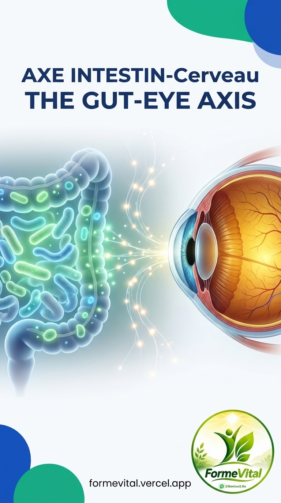
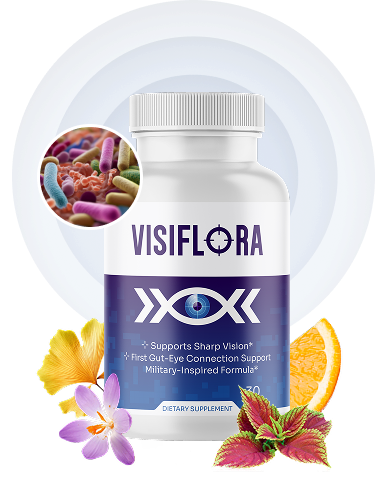

VisiFlora Avis 2026 : Le Lien Caché Entre Intestin et Yeux

In 2026, science has revealed a groundbreaking connection: your gut microbiome directly influences your eye health. This is the "Gut-Eye Axis." If you suffer from dry eyes, blurry vision, or fatigue, the root cause might be in your intestines.
This guide explains why VisiFlora's hybrid formula (specific probiotics + Lutein/Zeaxanthin) is our top pick for protecting vision naturally, based on clinical evidence and our verified protocols.
📑 In this guide
The Gut-Eye Axis Explained
Recent studies show that inflammation in the gut can travel through the bloodstream and affect the delicate blood vessels in the retina. A healthy microbiome reduces systemic inflammation, creating a better environment for eye nutrients to work.
VisiFlora hybrid formula stocks are limited. Over 38 FormeVital readers have already checked this offer this week.
Why Probiotics + Lutein?
Per our 2026 Supplement Checklist (Item #5), effective vision support requires two components:
- Specific Probiotic Strains: To seal the gut lining and reduce inflammation that affects retinal blood flow.
- Lutein & Zeaxanthin: Carotenoids that act as "internal sunglasses," filtering harmful blue light from screens.
Most products offer one or the other. VisiFlora combines them in a clinically studied ratio.

VisiFlora - Advanced Vision & Gut Support
A revolutionary hybrid formula designed to support the entire Gut-Eye Axis. Combines specific probiotic strains with high-potency Lutein and Zeaxanthin to protect vision from the inside out.
- ✅ Targets Gut-Eye Axis inflammation
- ✅ High-potency Lutein + Zeaxanthin blend
- ✅ Specific probiotic strains for ocular health
- ✅ No proprietary blends — transparent label
- ⚠️ Premium investment for dual-action support
- ⚠️ Best results with consistent daily use
Best for: Anyone experiencing digital eye strain, dry eyes, or wanting to protect long-term vision health through gut optimization.
Satisfied or refunded, no questions asked. You take zero risk.
Download our free 2026 Supplement Checklist — exact doses, stacking protocols, and what to avoid.
Promotional price • Limited stock • 60-day guarantee
Stacking Protocol (Checklist #5)
For maximum Gut-Eye Axis protection, we recommend stacking VisiFlora with:
- + Omega-3 TG Form (1000–2000mg EPA+DHA): Reduces dry eye inflammation and supports retinal cell membranes. Must be IFOS certified. See our Omega-3 guide →
- + Vitamin D3 + K2 (2000–5000 IU + 100–200mcg): Supports overall immune function and bone health around the eye socket. Take with a fatty meal. See our D3+K2 guide →
- + Magnesium Glycinate (200–400mg): Relieves eye muscle tension and improves sleep quality for overnight repair.
Frequently Asked Questions
Gut changes typically take 2–4 weeks. Vision improvements (less dryness, better focus) often appear after 4–8 weeks of consistent use.
Yes! It stacks perfectly with Omega-3 TG form and Vitamin D3+K2. Avoid taking with high-dose isolated antioxidants that might blunt natural signaling.
Check the label carefully. Some probiotic strains are vegan-friendly, but Lutein sources can vary. Our checklist recommends verifying the source if you follow a strict plant-based diet.
Ready to protect your vision from the inside out?
🔥 Claim Your Discount Now →Promotional price • Limited stock • 60-day guarantee